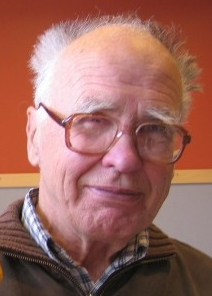

Lennart Carleson | |
|---|---|
 Lennart Carleson in May 2006. | |
| Born | 18 March 1928 |
| Education | Uppsala University (PhD) |
| Known for | Carleson–Jacobs theorem Carleson measure Carleson's theorem Corona theorem |
| Awards | Abel Prize (2006) Sylvester Medal (2003) Lomonosov Gold Medal (2002) Wolf Prize (1992) ForMemRS (1993) Leroy P. Steele Prize (1984) |
| Scientific career | |
| Fields | Mathematics |
| Institutions | Royal Institute of Technology Uppsala University University of California, Los Angeles |
| Arne Beurling | |
Doctoral students | Svante Janson Kurt Johansson Warwick Tucker |
{kind=link}
Lennart Axel Edvard Carleson (born 18 March 1928) is a Swedish mathematician, known as a leader in the field of harmonic analysis. One of his most noted accomplishments is his proof of Lusin's conjecture.[1][2] He was awarded the Abel Prize in 2006 for "his profound and seminal contributions to harmonic analysis and the theory of smooth dynamical systems."[3][4]
Life
Carleson was a student of Arne Beurling and received his Ph.D. from Uppsala University in 1950. He did his post-doctoral work at Harvard University where he met and discussed Fourier series and their convergence with Antoni Zygmund and Raphaël Salem who were there in 1950 and 1951. He is a professor emeritus at Uppsala University, the Royal Institute of Technology in Stockholm, and the University of California, Los Angeles, and has served as director of the Mittag-Leffler Institute in Djursholm outside Stockholm 1968–1984. Between 1978 and 1982 he served as president of the International Mathematical Union.
Carleson married Butte Jonsson in 1953, and they had two children: Caspar (born 1955) and Beatrice (born 1958).
Carleson has supervised 29 PhD students. They include Svante Janson, Kurt Johansson, Warwick Tucker, Bengt Rosén, Per Sjölin, Hans Wallin and Ingemar Wik.
Work
His work has included the solution of some outstanding problems, using techniques from combinatorics and probability theory (especially stopping times). In the theory of Hardy spaces, Carleson's contributions include the corona theorem (1962), and establishing the almost everywhere convergence of Fourier series for square-integrable functions (now known as Carleson's theorem). It was a famous old problem by Joseph Fourier when he invented Fourier analysis in 1807 and formalised by Nikolai Luzin in 1913 as the Lusin's conjecture. Kolmogorov proved a famous negative result of the conjecture for L1 function in 1923 and stated that the conjecture must be false. It was so until 43 years later when Carleson gave his proof at the International Congress of Mathematicians at Moscow in 1966. But his proofs were very hard and only understood in the late 80s and early 90s when a general theory of operators arrived and brought mathematicians closer to using his striking ideas with ease.
He is also known for the theory of Carleson measures. His tools and methods have been of fundamental importance to analysis as well as many areas of mathematics. The theorem for Fourier multipliers developed by Carleson and Per Sjölin has been standard in the study of the Kakeya problem. In 1974 he solved the extension problem for quasiconformal mappings, and gave important new results in the Bochner–Riesz mean in dimension two.
In the theory of dynamical systems, Carleson has worked in complex dynamics. His proof with Michael Benedicks of the existence of strange attractors in the Hénon map in 1991 led to a new field in dynamical systems.
In addition to publishing some landmark papers, Carleson has also published two books: First, an influential book on potential theory, Selected Problems on Exceptional Sets (Van Nostrand, 1967), and second a book on the iteration of analytic functions, Complex Dynamics (Springer, 1993, in collaboration with T. W. Gamelin). He was the co-editor along with Paul Malliavin, J. Neuberger and J. Wermer who collected and published the unpublished works of his mentor Arne Beurling in 1989.
Awards
He was awarded the Wolf Prize in Mathematics in 1992, the Lomonosov Gold Medal in 2002, the Sylvester Medal in 2003, and the Abel Prize in 2006 for his profound and seminal contributions to harmonic analysis and the theory of smooth dynamical systems.[3][5]
He is a member of the Norwegian Academy of Science and Letters.[6] In 2012 he became a fellow of the American Mathematical Society.[7] He became a Foreign Fellow of the Royal Society in 1993, Honorary member of the London Mathematical Society in 1981, the American Academy of Arts and Sciences, French Academy of Sciences, Royal Swedish Academy of Sciences, Finnish Society of Sciences and Letters, Finnish Academy of Science and Letters, Royal Danish Academy of Sciences and Letters and the Hungarian Academy of Sciences. He has honorary doctorates from many universities such as Helsinki, Paris and KTH Royal Institute of Technology, Stockholm.
Publications
- Selected Problems on Exceptional Sets. Belmont, Calif: Wadsworth Company. 1983. ISBN 978-0-534-98049-8.[8]
- Matematik för vår tid (Mathematics for our time), Prisma 1968[9]
- with Theodore Gamelin: Complex Dynamics. New York Berlin Heidelberg: Springer. 1996-02-02. ISBN 978-0-387-97942-7. MR 1230383.
References
- ^ Lennart Carleson at the Mathematics Genealogy Project
- ^ O'Connor, John J.; Robertson, Edmund F., "Lennart Carleson", MacTutor History of Mathematics Archive, University of St Andrews
- ^ a b "2006: Lennart Carleson". www.abelprize.no. Retrieved August 22, 2022.
- ^ Raussen, Martin (May 22, 2006). "Interview with Abel Prize Recipient Lennart Carleson" (PDF). AMS. Retrieved March 1, 2021.
- ^ Raussen, Martin; Skau, Christian (February 2007). "Interview with Abel Prize Recipient Lennart Carleson" (PDF). Notices of the American Mathematical Society. 54 (2): 223–229. Retrieved 2008-01-16.
- ^ "Gruppe 1: Matematiske fag" (in Norwegian). Norwegian Academy of Science and Letters. Archived from the original on 10 November 2013. Retrieved 7 October 2010.
- ^ List of Fellows of the American Mathematical Society, retrieved 2012-11-10.
- ^ Carleson, Lennart (1983). Selected Problems on Exceptional Sets. Belmont, Calif: Wadsworth Company. ISBN 978-0-534-98049-8.
- ^ "Academy of Europe: Publications". www.ae-info.org. Retrieved 2023-03-04.
External links
 Media related to Lennart Carleson at Wikimedia Commons
Media related to Lennart Carleson at Wikimedia Commons